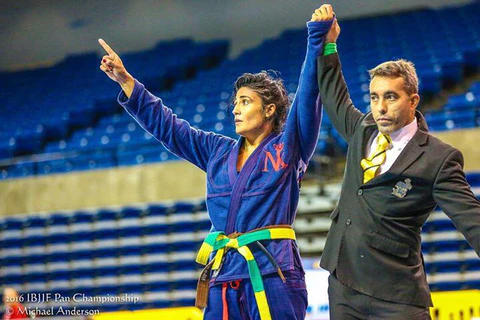

Últimas Notícias
Pan-Americano de Jiu-Jitsu reúne atletas em São Paulo.
Ivan Nascimento conquista o Bi em São Paulo
O atleta Ivan Nascimento, da equipe TEAM NASCIMENTO, brilhou mais uma vez no cenário internacional do Jiu-Jitsu.. Ivan competiu na sexta-feira, dia 26, no Pan Americano de Jiu-Jitsu 2025, realizado no tradicional Ginásio do Ibirapuera, em São Paulo. Ele disputou na categoria Master 4, faixa preta, pesadíssimo — que reúne atletas acima de 100 quilos e com mais de 40 anos de idade.
E o desempenho foi simplesmente impecável. Ivan entrou em duas lutas e finalizou ambas, sem deixar margem para dúvidas. Com isso, conquistou o título de grande campeão da sua categoria e celebrou o bicampeonato na competição — um feito que poucos atletas conseguem repetir.
A trajetória de Ivan é marcada por disciplina, técnica refinada e muita dedicação. Ele representa não só a força do Jiu-Jitsu em São José do Rio Pardo, mas também o espírito de superação que define os grandes competidores.

Ivan Nascimento, bi campeão, no lugar mais alto do podium em São Paulo.
Nova geração de faixas pretas se destaca em competições internacionais.
Hoje nós vamos falar de 4 garotos que acabaram de conquistar o importante título do campeonato Pan Americano de Jiu Jitsu em Irvine, na California. Matheus Gabriel, Levi Jones-Leary e Kaynan Duarte pela primeira vez disputaram o Pan Americano na principal divisão do Jiu Jitsu e Fellipe Andrew pela segunda, esses meninos parecem não terem sentido em nada a pressão de disputar esse importante torneio e conquistaram o lugar mais alto do pódio. Matheus, e Kaynan possuem apenas 21 anos de idade, enquanto Levi possui 22 e Fellipe 24. Dizer que falta experiência a esses atletas é um grande erro, haja visto que desde as faixas coloridas eles estão acostumados com as competições e a frequentarem os mais diversos pódios dos maiores campeonatos de Jiu Jitsu do Mundo.

Apesar de todos já terem conseguido ser campeões mundiais nas faixas coloridas, todos nós sabemos que na faixa preta as cosias são diferentes, não só pelo grau de profissionalização dessa faixa, mas também pela responsabilidade que existe em carregar uma faixa preta de Jiu Jitsu. É comum que até mesmo os grandes atletas consagrados hoje em dia atravesse por dificuldades assim que recebem tal graduação e perfeitamente aceitável que estes tenham um período de adaptação até que os resultados comecem a aparecer. Entretanto, os 4 caras citados acima parecem ter um Jiu Jitsu e um poder psicológico tão afiado a ponto de continuarem brilhando assim como faziam nas faixas coloridas, também na principal divisão do Jiu Jitsu
Notícias Relevantes
Entrevista exclusiva com campeão mundial sobre preparação e treinos.
Saiba Tudo Sobre Nika Schwinden, A Tri Campeã Mundial De Jiu Jitsu Na Categoria Master
Conversamos com Nika Schwinden, a fera dos tatames na categoria Master, representando a Gracie Barra, Nika é um dos principais nomes do Jiu Jitsu Feminino atual, além de dar aulas, também compete em alto nível, sempre vencendo nos principais campeonatos ao redor do mundo, em entrevista exclusiva Nika nos conta um pouco da sua história no Jiu Jitsu, seus títulos e sua expectativa para o ano de 2019, confira:
BJJFANATICS: Você Poderia Nos Falar Um Pouco Mais Sobre Quando Começou no Jiu Jitsu, E Onde Treinava? Desde O Início você Já Gostava De Competir? Em Algum Momento Tinha Alguma Pretensão Em Viver Do Esporte?

"Eu comecei a treinar aos 28 anos e só participei da minha primeira competição com 15 dias de treino, não, eu
não amava competir, mas nunca aceitei ser controlada, e o medo de competir não faria isso comigo. Ainda hoje
competir é um desafio pessoal, minha batalha interna, minha busca por autocontrole e disciplina.
"Comecei na academia Equipe 1 aqui em Curitiba, hoje a mesma se tornou uma Matriz da equipe Checkmat. Fiz
parte da Checkmat da Faixa Branca até a Faixa Preta e sou muito grata por tudo que vivenciei e aprendi nesse
período."
O crescimento do Jiu-Jitsu feminino no Brasil impressiona especialistas.
Mulheres nos tatames brasileiros bateu recorde
O número de mulheres nos tatames brasileiros bateu recorde, consolidando a modalidade como uma das que mais crescem no país. Especialistas apontam que o aumento é reflexo direto da lógica do esporte — focada em alavancas, técnica e estratégia em vez de força bruta — e da busca por autodefesa, equilíbrio emocional e empoderamento.
Impactos e Transformações no Cenário:Empoderamento e Defesa Pessoal: A prática tem sido amplamente utilizada como ferramenta para superação de traumas e aumento da autoconfiança, transformando os tatames em espaços de resistência e pertencimento feminino.Protagonismo Competitivo: Grandes organizações têm investido em torneios voltados exclusivamente para o público feminino, com direito a premiações em dinheiro e destaque nas principais competições de arte suave.Acessibilidade Esportiva: A premissa de que a técnica supera a potência física tornou o esporte democrático e progressivo para mulheres de diferentes idades e biotipos.
Eventos
Seminário com mestres renomados no Rio de Janeiro.
Os seminários de Jiu-Jitsu no Rio de Janeiro reúnem grandes lendas e mestres da arte suave com foco em posições, defesa pessoal e mentalidade de competição. As oportunidades na região da Baixada Fluminense e adjacências podem ser acompanhadas diretamente nas federações e academias locais.
Campeonato Nacional de Jiu-Jitsu em Brasília.
O Campeonato Brasileiro de Jiu-Jitsu 2026, principal competição organizada pela CBJJ, ocorreu entre os dias 24 de abril e 3 de maio de 2026 no Ginásio Poliesportivo José Corrêa, em Barueri (SP).